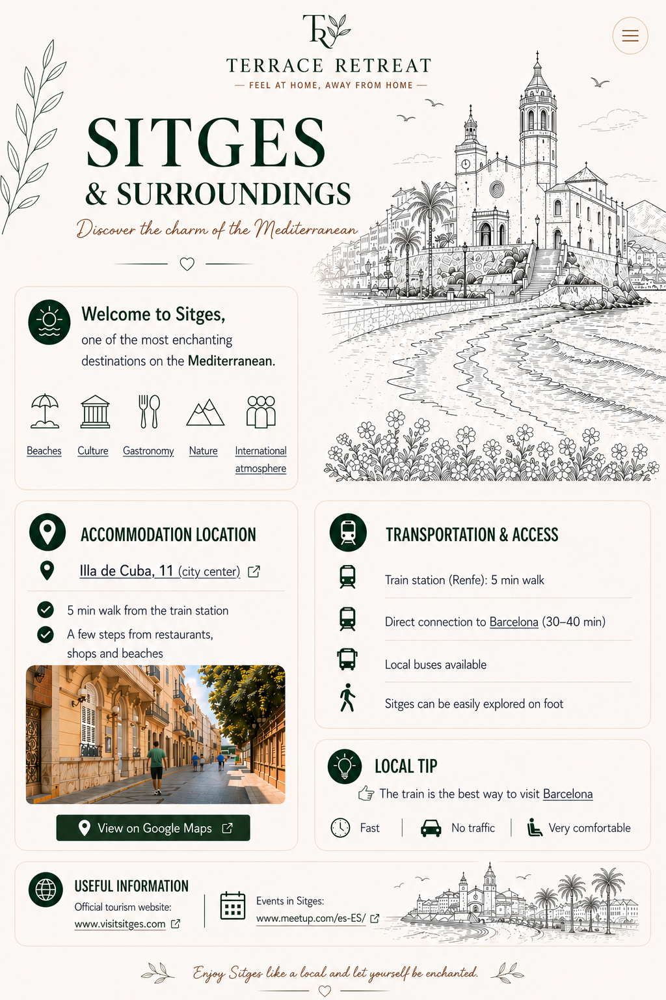
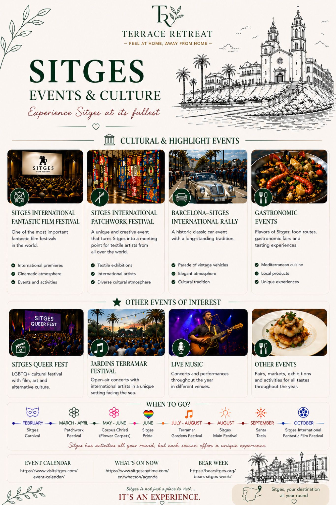
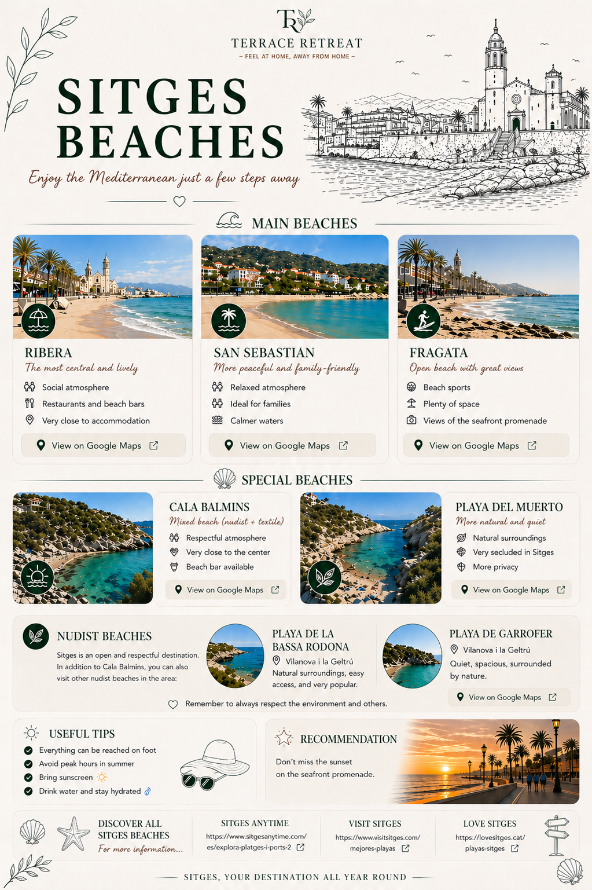
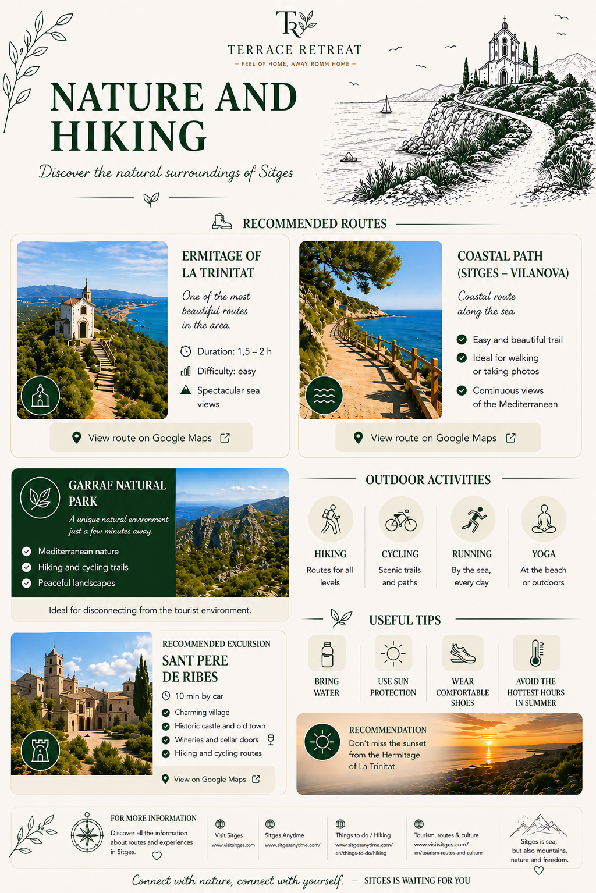
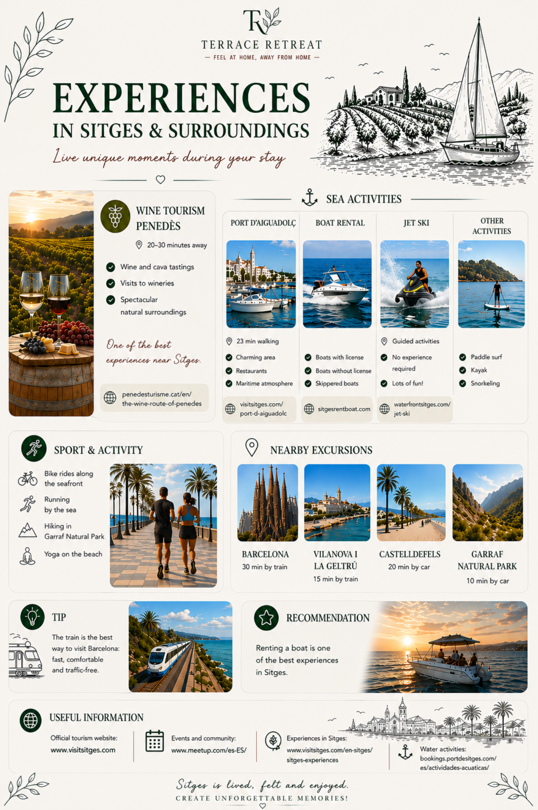
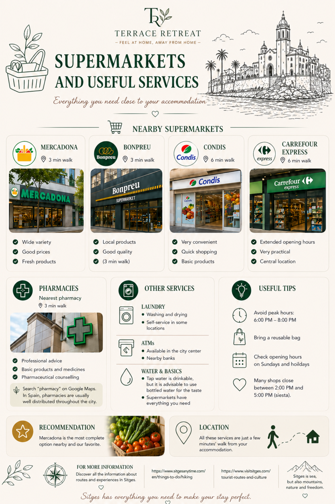
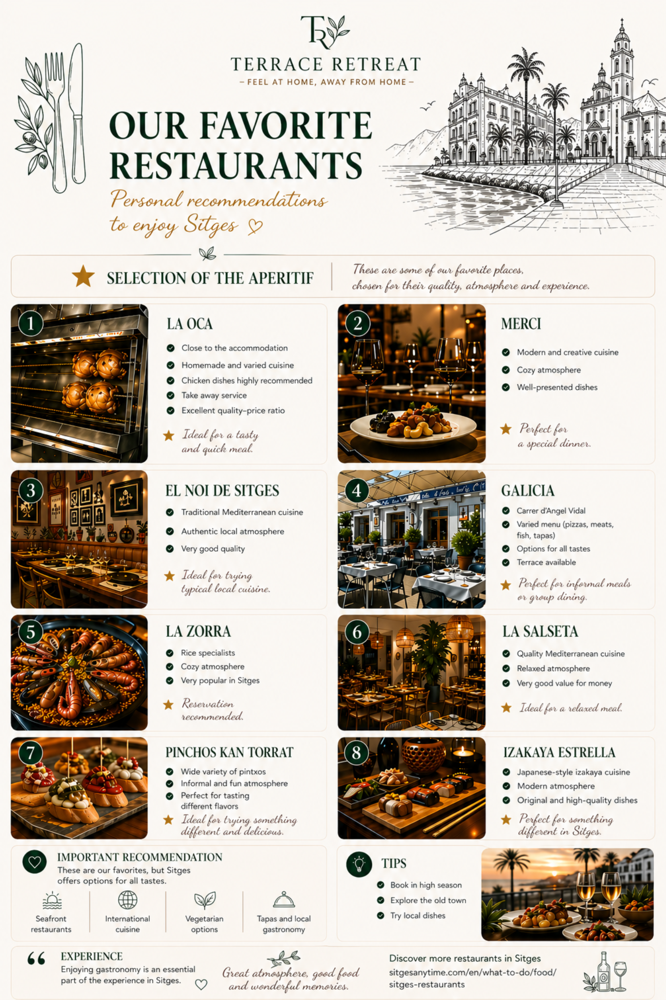
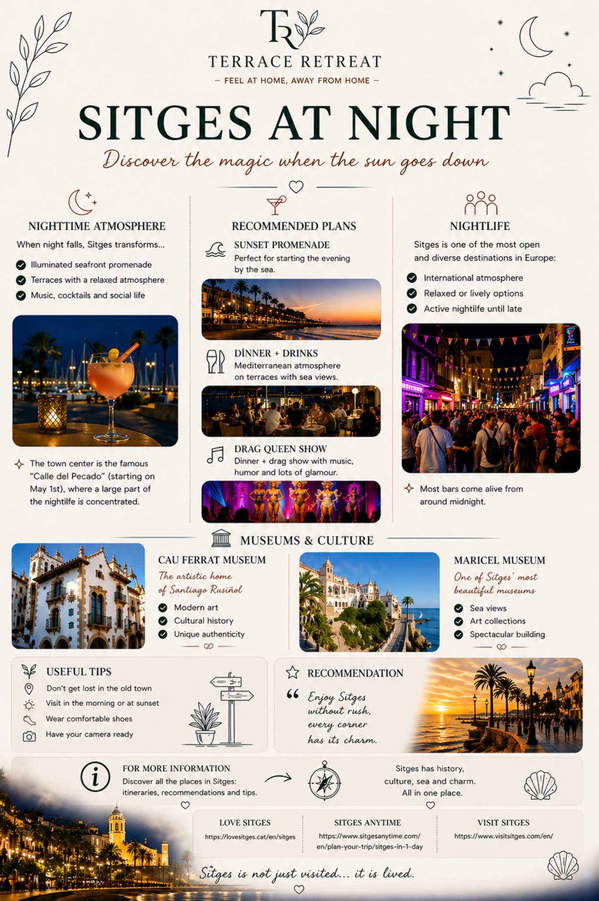
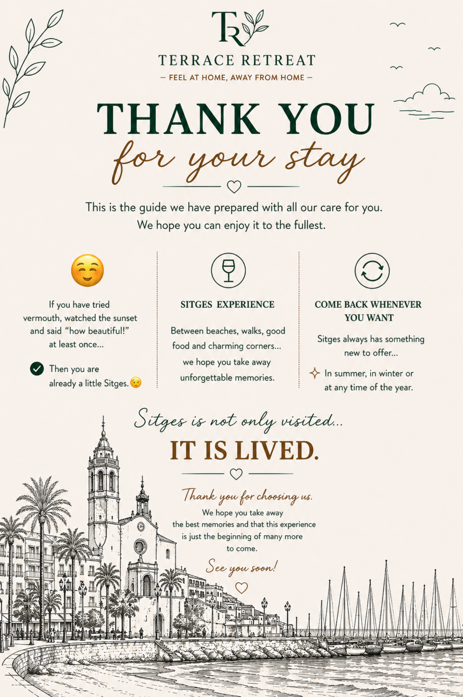

Go to beaches section Go to culture and things to see section Go to gastronomy and restaurants section Go to nature section Go to events and international atmosphere section Open Illa de Cuba 11 in Google Maps View accommodation on Google Maps Open Barcelona in Google Maps Open Barcelona in Google Maps Open Visit Sitges Open Meetup events in Sitges Open Visit Sitges event calendar
Open Sitges Anytime agenda
Open Bear Week
Open Visit Sitges event calendar
Open Sitges Anytime agenda
Open Bear Week

Open Visit Sitges event calendar Open Sitges Anytime whats on now Open Bear Week Open Catalunya tourism Sitges
Open Love Sitges
Open Sitges Anytime one day guide
Open Visit Sitges
Open Catalunya tourism Sitges
Open Love Sitges
Open Sitges Anytime one day guide
Open Visit Sitges

Ribera beach on Google Maps Sant Sebastia beach on Google Maps Fragata beach on Google Maps Cala Balmins on Google Maps Playa del Muerto on Google Maps Playa de Garrofer on Google Maps Open Sitges Anytime beaches Open Visit Sitges beaches Open Love Sitges beaches
Ermitage of La Trinitat route on Google Maps Coastal path route on Google Maps Sant Pere de Ribes on Google Maps Open Visit Sitges Open Sitges Anytime Open hiking information Open tourism routes and culture
Penedes wine region on Google Maps Open Penedes wine route Port d'Aiguadolc on Google Maps Open Port d'Aiguadolc information Open Sitges Rent Boat Open Waterfront Sitges jet ski Barcelona on Google Maps Vilanova i la Geltru on Google Maps Castelldefels on Google Maps Garraf Natural Park on Google Maps Open Visit Sitges Open Meetup Open Sitges experiences Open water activities
Mercadona Sitges on Google Maps Bonpreu Sitges on Google Maps Condis Sitges on Google Maps Carrefour Express Sitges on Google Maps Pharmacies in Sitges on Google Maps Open Sitges Anytime Open Visit Sitges tourist routes
La Oca Sitges on Google Maps Merci Sitges on Google Maps El Noi de Sitges on Google Maps Galicia Sitges on Google Maps La Zorra Sitges on Google Maps La Salseta Sitges on Google Maps Pinchos Kan Torrat on Google Maps Izakaya Estrella Sitges on Google Maps Open more restaurants in Sitges
Calle del Pecado on Google Maps Sitges seafront promenade on Google Maps Cau Ferrat Museum on Google Maps Maricel Museum on Google Maps Open Love Sitges Open Sitges Anytime Open Visit Sitges
Events & Culture
Discover festivals, traditions and local culture all year round.
Beaches
Enjoy some of the best beaches on the Mediterranean coast.
- Ribera – central and lively
- San Sebastián – calm and family-friendly
- Fragata – great views